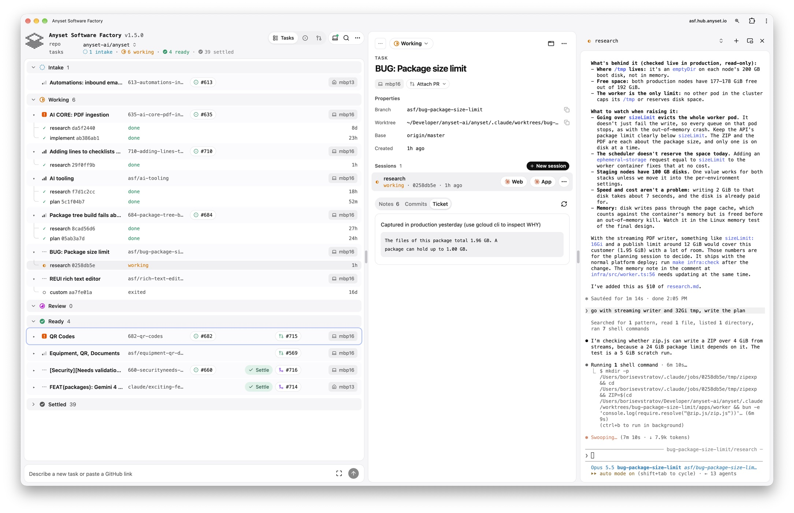

for everything else there's superlogical.
things have changed drastically. now i live in the Ghostty terminal, running omadots almost vanilla plus a bunch of clis from omaterm. herdr is my multiplexer and main workspace. for coding agents i use all of them: claude code, codex, antigravity, opencode. for review i've got lazygit and tuicr. and for runtimes and package management, mise — mise is amazing.
the whole setup is basics 101: terminal, ssh, tailscale, cli tools — that's all. that's how i get exactly the same workspace regardless of whether it's mac, linux, or a vm in a datacenter.
these are the tools i used to use while crafting
dev stuff
also check out these programs
personal / productivity / creativity